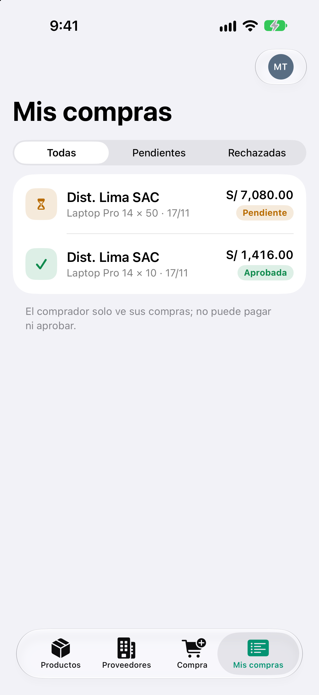
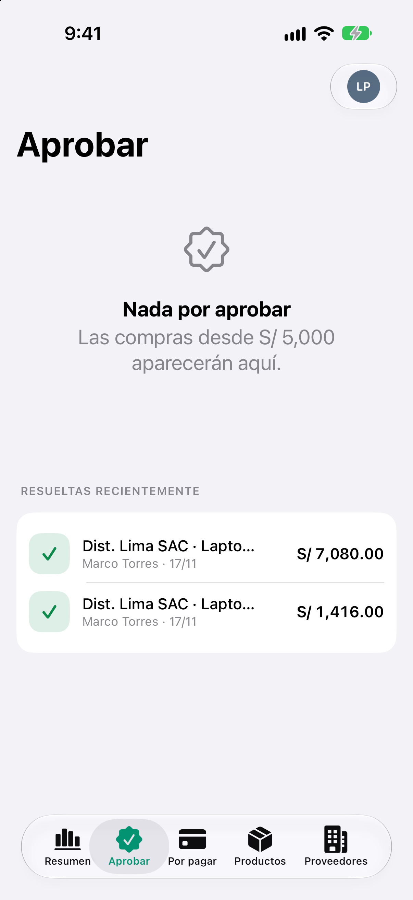
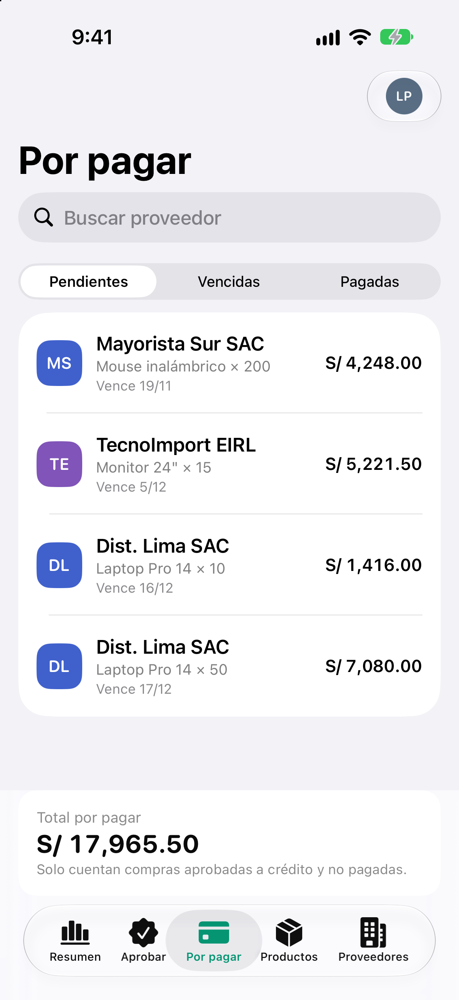

Xcode 27.2 · Swift · SwiftUI · SwiftData · Swift Charts · iPhone 18 Pro (simulador)
Valor agregado
Resumen con dos gráficos de Swift Charts (barras por proveedor y línea por mes) y vista previa del efecto antes de aprobar una compra
Las capturas provienen de la app ejecutándose en el simulador. Las reglas de negocio además se comprueban con un verificador incluido en el repositorio (carpeta Verificacion).
1. Integrantes y caso
Trabajo individual de Jason Gómez, Grupo B, app «Compras Tecsup»: el comprador registra compras a proveedores y el supervisor las aprueba, rechaza o paga. Los datos se guardan con SwiftData en un archivo SQLite y permanecen al cerrar la app.
2. Modelo de datos
Clase @Model
Atributos
Relaciones
Usuario
nombre, usuario (único, en minúsculas), clave, rol
Dibujo de las cajas y flechas: Usuario ◂── Compra ──▸ Proveedor, y Compra ──▸ Producto. Cada flecha de vuelta (compras) es la relación inversa con regla .deny: un usuario, proveedor o producto que ya tiene compras no se puede borrar y la app avisa con una alerta. Lo que se calcula y no se guarda: total comprado y compras por pagar de un proveedor, valor de inventario de un producto.
3. Roles y permisos
Qué puede hacer
Comprador
Supervisor
Pestañas
Productos · Proveedores · Compra · Mis compras
Resumen · Aprobar · Por pagar · Productos · Proveedores
Productos y proveedores
Solo consultar y buscar
Crear, editar y borrar
Compras
Registrar y ver solo las suyas
Aprobar o rechazar, ver todo y pagar
Cuenta
Menú del avatar con Cerrar sesión
Menú del avatar con Cerrar sesión (y cargar compras de ejemplo)
4. Reglas de negocio con ejemplo numérico
Regla
Ejemplo resuelto
IGV 18 % sobre el subtotal; total = subtotal + IGV
10 u. × 120.00 = 1,200.00 → IGV 216.00 → total 1,416.00
Aprobación: total menor a S/ 5,000 queda Aprobada al instante; desde S/ 5,000 queda Pendiente y no cambia nada
Contado: queda pagada. Crédito 30 días: pendiente de pago, vence a los 30 días
Compra del 17/11/2026 a crédito → vence el 17/12/2026
Pagar (solo supervisor): sale de Pendientes
Total por pagar 23,346.30 − 3,964.80 = 19,381.50
Rechazo: el motivo es obligatorio; no cambia stock ni costo
Sin motivo el botón queda apagado
Vencida: crédito aprobado, sin pagar, con fecha de vencimiento pasada
Compra con 40 días de antigüedad → VENCIDA
Crédito fiscal: suma del IGV de las compras aprobadas
216.00 + 216.00 + 1,080.00 + 216.00 = 1,728.00
5. Pantallas (B1 a B9)
Pant.
Propósito
Qué lee o escribe
B1
Iniciar sesión (mensaje genérico de error)
Lee Usuario con #Predicate
B2
Crear cuenta con aviso «Disponible / Ya existe» y rol
Escribe Usuario
B3
Productos: búsqueda, stock en color, valor del inventario
Lee/escribe Producto
B4
Proveedores con total comprado y «por pagar»
Lee Proveedor y sus compras
B5
Nueva compra con IGV, contado o crédito y aviso de aprobación
Escribe Compra, cambia Producto
B6
Mis compras (Todas / Pendientes / Rechazadas)
Lee Compra del usuario de la sesión
B7
Aprobar o rechazar con vista previa del efecto
Cambia Compra y Producto
B8
Por pagar (Pendientes / Vencidas / Pagadas) y pago por deslizamiento
Cambia Compra
B9
Resumen: inventario, crédito fiscal, por pagar, por aprobar y gráficos
Lee Compra, Producto, Proveedor
B1 Login con el ícono del enunciadoB2 Registro con «Disponible» y rolB3 Productos con stock en colorB4 Proveedores: comprado y por pagarB5 Nueva compra con resumen

B6 Mis comprasB7 Aprobar con vista previaB8 Por pagar con VENCIDA
B9 Resumen del supervisorB9 Gráfico de compras por mesEl supervisor ve el botón + para crear
6. Casos de prueba
Cada caso se ejecutó en el simulador y, además, se comprueba con Verificacion/ejecutar.sh, que usa las mismas clases con una base en memoria. Resultado: 11 de 11 casos aprobados (los 9 del enunciado más 2 propios: borrado protegido y crédito fiscal).
Caso 1 · Usuario único ✓
Se registra «mtorres» como Comprador. Al intentar repetirlo, incluso como «MTorres», la app muestra «Ya existe» y no lo crea; solo queda un «mtorres».
Caso 2 · Claves inválidas y login incorrecto ✓
Una clave de menos de 6 caracteres o dos claves distintas muestran un error y no crean el usuario. El login con datos incorrectos responde «Usuario o clave incorrectos» sin decir cuál falló.
Queda pagada, sin fecha de vencimiento y no aparece en «Por pagar». (Comprobado con el verificador; en el simulador se probó el crédito, que es el camino que genera deuda.)
Caso 5 · Compra de 50 u. a S/ 120.00 (total 7,080.00) ✓
El formulario avisa que supera S/ 5,000 y el botón cambia a «Enviar a aprobación». Queda Pendiente: el stock y el costo promedio no cambian y no suma a «por pagar».
Aviso antes de enviarEnviada a aprobación
Caso 6 · El supervisor aprueba la compra del caso 5 ✓
La pantalla muestra «Si apruebas: stock 50 → 100, costo promedio S/ 112.00 → S/ 116.00» y al aprobar esos valores se aplican y la compra pasa a «Por pagar». Nota: en el simulador los casos se ejecutaron encadenados (el caso 3 ya había subido el stock a 50). Sobre una base limpia (stock 40) la misma fórmula da 90 y 115.56, valor que verifica el script.
Vista previa

Compra resueltaYa en «Por pagar»
Caso 7 · Rechazar con motivo obligatorio ✓
El botón «Rechazar compra» permanece apagado mientras el motivo esté vacío. Con motivo, la compra queda Rechazada, el comprador lo ve en «Mis compras» y el stock no cambia.
Hoja de rechazo con el botón apagado
Caso 8 · Crédito vencido y pago ✓
La compra a crédito con vencimiento pasado se muestra en «Vencidas» con la etiqueta VENCIDA. Al deslizar y pulsar «Pagar» pasa a «Pagadas» y el total por pagar baja exactamente su importe: 23,346.30 → 19,381.50 (−3,964.80).
VENCIDADeslizar para pagar

Total actualizadoSegmento Pagadas
Caso 9 · El comprador solo ve lo suyo ✓
«Mis compras» filtra por el usuario de la sesión, así que nunca aparecen compras de otra persona, y el comprador no tiene ninguna opción de aprobar ni pagar: esos botones solo existen en las pestañas del supervisor.
Compras de «mtorres»
7. Valor agregado
Resumen con Swift Charts: barras con el total comprado por proveedor y una línea con las compras aprobadas de los últimos seis meses, además de cuatro cifras clave (inventario, crédito fiscal, por pagar y por aprobar).
Vista previa del efecto: antes de aprobar, el supervisor ve cómo cambiarán el stock y el costo promedio.
Compras de ejemplo: el supervisor puede cargar 11 compras de los últimos meses para ver los gráficos con datos.
Verificador: un script ejecuta los 9 casos del enunciado y 2 propios contra las clases reales de la app.
8. Plan de uso de IA
El código de esta rama se escribió con ayuda de Claude Code, en un estilo simple, parecido al de la Actividad 02. Se verificó con los 9 casos del enunciado en el simulador y con el script Verificacion/ejecutar.sh. La versión alternativa, con el registro de sus prompts, está en la rama ai-assisted (archivo PROMPTS.md).
9. Estructura del proyecto y plan de commits
Carpeta o archivo
Contenido
Modelos/
Usuario, Proveedor, Producto y Compra (con sus reglas)
Sesion.swift
Registro, login y usuario de la sesión (@Observable)
ModelContainerProvider.swift
Contenedor SwiftData (singleton), como en la Actividad 02
DatosIniciales.swift
Productos y proveedores iniciales; compras de ejemplo
Los commits van de abajo hacia arriba: proyecto y recursos, modelos, sesión y datos, pantallas B1 a B9, navegación por rol, verificador y documentación, cada uno con una sola intención.
10. Cómo probarla
Abrir apple_lab11_B_Compras.xcodeproj en Xcode y ejecutar en un iPhone del simulador.
Crear una cuenta de Supervisor y otra de Comprador desde «Crear cuenta» (no hay usuarios precargados; el catálogo de 4 productos y 3 proveedores sí se carga la primera vez).
Como comprador, registrar compras; como supervisor, aprobarlas y pagarlas. Opcional: menú del avatar ▸ «Cargar compras de ejemplo».
Para repetir los casos desde cero, borrar la app del simulador.
11. Visto bueno del docente
Expediente pendiente de revisión. Fecha y firma en blanco para que el docente las complete.